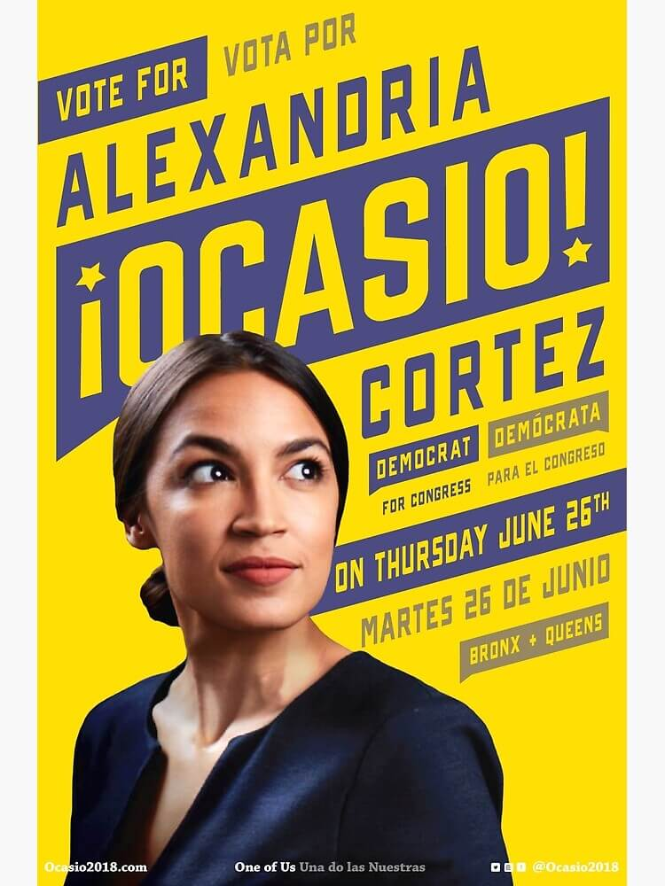
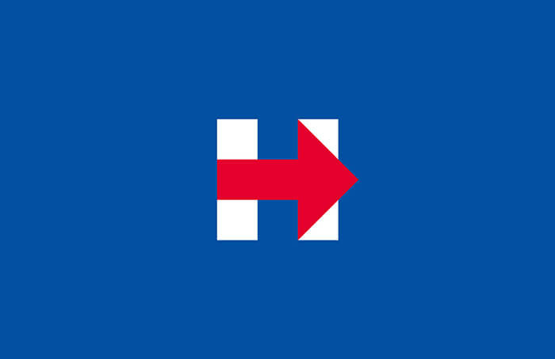
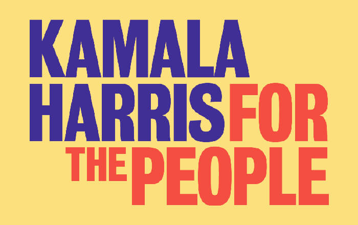

Logo
It takes much more than a good set of graphics to run a successful campaign, but it certainly helps. The question is — how many can you remember two years after the event?
Every four years, the Get Out the Vote campaign invites graphic designers to make posters that rally US voters to go to the polls. Here, 10 posters that rock the vote.
Love to Vote
- Jonathan Mikulich
Rise & Vote
- Jesse Wu
You won’t be seen if you don’t vote
- Milton Glaser
Voting is part of your morning routine
- Natalia Warren
Immigrants’ votes matter
- Jesus Garcia
Vote — or risk extinction
- Robbie Knight
Voting can be playful — yet purposeful
- Jessica Helfand
Delight people into voting
- Sarah Hinman
Write America’s next chapter with your ballot
- Drew Davies
Suffragette struggles can inspire us to vote
- Alexandra South
What goes into a good political logo? Graphic designer Michael Wolff believes to have a good design, you need to “get under people’s skin”
No roundup of political design can neglect to mention the now-iconic image of Obama, pictured above the word “Hope”. The Social Realist piece by street artist Shepard Fairey has spawned a thousand copy-cats, partly inspired by the artist’s own desire to encourage Obama supporters to develop their own images. These days you can create your own version using the wide array of generators on the internet, but the original is one of the most recognisable political designs in recent history.
The appeal of the image is in its simplicity — Obama was fresh-faced, a stark contrast to the weary incumbent George W. Bush and was on course to become the first African-American President of the United States. “Hope” not only summed up supporters’ desires for their President — it also summed up their ambition for America’s future.
Good campaign design isn’t always about fancy or complex graphics; often it’s about presenting a message in a clear and effective way.
The Clinton campaign followed suit, though Bierut and his team at Pentagram strove to make Clinton’s branding less about exuding familiarity and experience more about being approachable.
Designed by Maria Arenas, the Alexandria Ocasio’s campaign was fresh, stylish, and modern. Arenas’ work combined great photography with striking typography, using the simple concept of complimentary colours (#EFCA2D for the yellow and #464675 for the purple) to devise a powerful, shareable set of graphics.
  